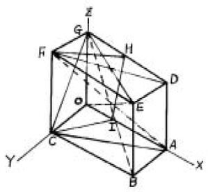
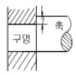
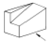
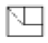
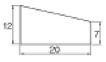
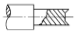

주조기능사 (2005-07-17 기출문제)
1과목: 금속재료일반
1. 펄라이트의 설명으로 맞는 것은?
- 페라이트와 시멘타이트의 공석강이다.
- 전성이 낮은 아공석강이다.
- 탄소 4.3%의 δ 고용체이다.
- 마텐자이트와 같은 조직을 갖는다.
(정답률: 알수없음)

2. 재료의 물리적 성질로 틀린 것은?
- 융점
- 비중
- 강도
- 비열
(정답률: 알수없음)
3. 전기저항 재료나 열전쌍으로 이용되지 않는 Ni 합금은?
- 콘스탄탄
- 모넬메탈
- 알루멜
- 니크롬
(정답률: 알수없음)
4. 인장시험편을 만들 때 고려하지 않아도 되는 것은?
- 표점거리
- 평행부의 길이
- 시험편의 무게
- 평행부 단면적
(정답률: 알수없음)
5. 계(system)의 구성원을 나타내는 것은?
- 성분
- 상률
- 복합상
- 평형
(정답률: 알수없음)
6. 서로 다른 상태로 존재하는 동일원소의 두 고체를 무엇이라고 하는가?
- 전위
- 동소체
- 재결정
- 고용체
(정답률: 알수없음)
7. 강의 표준조직을 얻기위한 가장 적합한 열처리법은?
- 풀림(어닐링)
- 뜨임(템퍼링)
- 불림(노말라이징)
- 담금질(퀜칭)
(정답률: 알수없음)
8. 저탄소, 저규소의 주철에 칼슘 - 실리케이트를 접종하여 강도를 높인 것은?
- 백심가단 주철
- 칠드 주물
- 구상흑연 주철
- 미해나이트 주철
(정답률: 알수없음)
9. 어떤 물질을 구성하고 있는 원자가 규칙적으로 배열된 것을 무엇이라 하는가?
- 결정체
- 조직체
- 형성체
- 고용체
(정답률: 알수없음)
10. 합금에서 응고 범위가 너무 넓든지, 성분금속 상호간에 비중의 차가 크든지 하면 주조할 때 어떤 결함이 생기는가?
- 개재물
- 시효경화
- 편석
- 백점
(정답률: 알수없음)
11. 강 구조물의 피로현상에 대한 설명으로 틀린 것은?
- 반복하중을 받는 구조물에서 잘 발생한다.
- 피로파손의 과정은 균열생성 및 전파, 그리고 최종파단으로 구성된다.
- 표면경화법은 피로수명을 저하시킨다.
- 구조물 표면의 노치나 구멍은 피로수명을 낮춘다.
(정답률: 알수없음)
12. 600℃ 에서 6:4 황동(muntz metal)의 평형상태도 조직은?
- α + β
- β + γ
- β
- α
(정답률: 알수없음)
13. 지름이 큰 재료일수록 담금질 하기가 어려운 가장 큰 이유는?
- 질량효과 때문이다.
- 타임 퀜칭 때문이다
- 항온효과 때문이다.
- 천칭관계 때문이다.
(정답률: 알수없음)
14. 도면과 같은 금속결정 중의 원자면에서 (1 0 0)면을 나타내는 면은?

- (ACFD)
- (ACGD)
- (ABED)
- (FHIC)
(정답률: 알수없음)
15. 구상흑연주철의 조직의 분류로 틀린 것은?
- 시멘타이트형
- 레데뷰라이트형
- 펄라이트형
- 페라이트형
(정답률: 알수없음)
16. 아래 그림에서 "?"가 뜻하는 것은?

- 틈새
- 죔새
- 공차
- 축 지름
(정답률: 알수없음)
17. 다음 중 축척에 해당하는 척도는?
- 1/1
- 1/2
- 2/1
- 10/1
(정답률: 알수없음)
18. 그림과 같은 물체를 3각법에 의하여 투상하려고 한다. 화살표 방향을 정면도로 할 때 평면도는?


(정답률: 알수없음)
19. 외형선보다 가늘게 프리핸드로 불규칙하게 긋는 선은?
- 가상선
- 절단선
- 파단선
- 지시선
(정답률: 알수없음)
20. 다음 기호 중 치수 숫자와 같이 사용하는 기호가 아닌 것은?
- C
- R
- t
- △
(정답률: 알수없음)
2과목: 금속제도
21. 재료표시 방법에서 청동을 표시하는 기호는?
- Bs
- Br
- HBs
- Cu
(정답률: 알수없음)
22. 나사의 간략 도시법 설명 중 틀린 것은? (단, 나사부는 눈에 보이는 경우이다.)
- 숫나사의 바깥지름(산)은 굵은 실선으로 그린다.
- 숫나사 및 암나사의 골은 가는 실선으로 그린다.
- 완전나사부와 불완전나사부의 경계선은 굵은 실선으로 그린다.
- 암나사의 안지름(산)은 가는 실선으로 그린다.
(정답률: 알수없음)
23. 아래 도형의 기울기는?

- 5/20
- 7/20
- 12/20
- 7/12
(정답률: 알수없음)
24. 아래 도형과 같은 형태로 도시되는 단면도의 종류는?

- 온단면도
- 한쪽 단면도
- 부분 단면도
- 조합 단면도
(정답률: 알수없음)
25. 상하 대칭인 물체를 반쪽은 외형도로 나타내고 반쪽은 단면도로 나타낼 경우의 단면도는?
- 온 단면도(전단면도)
- 한쪽 단면도(반단면도)
- 국부 단면도
- 부분 단면도
(정답률: 알수없음)
26. 아래치수 허용차가 0 이며, 끼워맞춤에서 기준이 되는 구멍의 기호는?
- E
- H
- M
- P
(정답률: 알수없음)
27. 도면의 척도를 "N S" 로 표시하는 경우는?
- 그림의 형태가 척도에 비례하지 않을 때
- 척도가 두 배일 때
- 축척임을 나타낼 때
- 배척임을 나타낼 때
(정답률: 알수없음)
28. 용탕을 버리는 일정한 장소로 적당한 것은?
- 콘크리트 바닥 위
- 물이 있는 곳
- 주물사 또는 모래 위
- 연소물질이 있는 곳
(정답률: 알수없음)
29. 유류 소화에 가장 적당한 것은?
- 황산
- 물
- 포말 소화기
- 산 알칼리 소화기
(정답률: 알수없음)
30. 용융 금속에 높은 압력이 걸려 조직이 치밀하고 수축공이 없으며 회전력으로 인해 비중차에 의한 개재물의 분리가 가능하여 관이나 원통형을 만들때 코어가 필요없는 것은?
- 원심 주조법
- 다이캐스팅법
- 금형 주조법
- 인베스트먼트법
(정답률: 알수없음)
31. 다음 중 주물사에 대한 설명으로 틀린 것은?
- 용융금속과 반응성이 좋아야 한다.
- 충분한 강도를 가져야 한다.
- 통기성이 좋아야 한다.
- 값이 싸야 한다.
(정답률: 알수없음)
32. 큐폴라 용해시 슬랙이 응고(hanging) 되었을 때의 대책 중 틀린 것은?
- 코크스의 비를 많게 한다.
- 석회석이나 형석의 양을 증가시킨다.
- 바람 구멍의 슬랙을 철봉으로 때려 떨어뜨린다.
- 풍압을 상승시키고 망간을 더 첨가시킨다.
(정답률: 알수없음)
33. 용탕의 주입작업시 주의할 점으로 틀린 것은?
- 용탕을 가지고 뛰지 않는다.
- 용탕을 신속 주입하기 위해 레이들을 높이 들어 주입한다.
- 주입 중 절대로 얼굴을 탕구 가까이 내밀지 않는다.
- 주입 작업시 보호구를 착용한다.
(정답률: 알수없음)
34. 규사에 점토나 다른 점결제를 배합한 것으로 내열성과 통기도가 좋고 주조 후 털어내기 쉬워야 하는 모래는?
- 코어모래
- 표면모래
- 생형모래
- 분리모래
(정답률: 알수없음)
35. 응고될 때 용탕의 부족으로 최종 응고 부위에 구멍이 형성되는 결함은?
- 핀홀
- 기포
- 수축공
- 스캐브
(정답률: 알수없음)
36. 코어의 위치를 고정하기 위하여 사용되는 것은?
- 채플릿
- 주포
- 당금
- 면봉
(정답률: 알수없음)
37. 정반의 양쪽 면에 각각 모형의 상형과 하형을 붙이는 모형방식은?
- 매치 플레이트
- 패턴 플레이트
- 이단 플레이트
- 한쪽 플레이트
(정답률: 알수없음)
38. 주형 기계에 의한 주조작업시 안전에 관한 사항 중 틀린 것은?
- 진동기를 동작시켜 매치프레이트형에 미세한 진동을 주어야 한다.
- 쇳물 주입 후 쇳물이 주형에 차 있는지를 확인하기 위해 탕구나 압탕속을 들여다 보아야 한다.
- 철판띠를 미리 끼워 조형한 주형에는 주입추를 올려 놓고 주입한다.
- 주입시 쇳물이 넘치거나 새는 일이 없도록 주형틀 주위를 주물사로 쌓도록 한다.
(정답률: 알수없음)
39. 용접부에 대한 내부결함의 유무, 결함의 종류 등을 탐상하기 위한 가장 좋은 방법은?
- 응력 측정시험
- 방사선 투과시험
- 염색 침투탐상시험
- 와전류 탐상시험
(정답률: 알수없음)
40. 주조품을 생산하기 위한 공정이 아닌 것은?
- 전주
- 용해
- 원형제작
- 주조방안설계
(정답률: 알수없음)
3과목: 주조작업일반
41. 재료에 따라서 모형을 분류할 때 다른 모형에 비하여 제작비는 비싸지만 내구성과 정밀도가 좋아서 대량 생산용으로 널리 쓰이는 것은?
- 목형
- 금형
- 현물형
- 왁스형
(정답률: 알수없음)
42. 주강용에 사용되는 생형용 도형제로 가장 적합한 것은?
- 규석가루
- 마그네시아
- 지르콘샌드
- 샤모트샌드
(정답률: 알수없음)
43. 금형 재료로서 요구되는 성질은?
- 내마멸성이 클 것
- 가공이 잘 안될 것
- 열 확산율이 클 것
- 팽창량이 클 것
(정답률: 알수없음)
44. 주물사의 결합력을 향상시켜 성형성을 좋게 하고 강도를 높이는데 사용되는 재료는?
- 이형제
- 도형제
- 보조제
- 점결제
(정답률: 알수없음)
45. SiO2와 Na2CO3을 약 1000℃에서 물과 함께 가열하여 만든것으로 CO2주형에 널리 쓰이는 특수 주형재료는?
- 석고
- 시멘트
- 물유리
- 합성수지
(정답률: 알수없음)
46. 큐폴라의 유효 높이는?
- 바람 구멍면 ∼ 장입구 밑면
- 바람 구멍면 ∼ 출재구
- 출탕구 ∼ 장입구 밑면
- 출탕구 ∼ 출재구
(정답률: 알수없음)
47. 주철주물에서 규소 및 탄소의 함유량이 많고 비교적 산화되지 않는 좋은 용금의 쇳물표면 모양은?
- 부정형
- 송엽형
- 세엽형
- 구갑형
(정답률: 알수없음)
48. 주물사의 입도시험에 쓰는 표준체의 기본단위는?
- g
- mesh
- cm
- 자
(정답률: 알수없음)
49. 큐폴라에서 나온 슬랙의 색이 흑색으로 되면 어떤 산화물이 많기 때문인가?
- 산화규소
- 산화칼슘
- 산화철
- 산화망간
(정답률: 알수없음)
50. 주형제작시 탕구계의 주입컵을 만드는 이유로 틀린 것은?
- 용탕의 주입 및 냉각온도 조절
- 용탕의 주입속도 조절
- 모래나 슬래그 등의 혼입 방지
- 탕구 밖으로 용탕이 흐르는 것의 방지
(정답률: 알수없음)
51. 주물에 기포가 발생하는 직접적인 주 원인은?
- 용해 온도가 낮을 때
- 용융금속에 가스가 함유할 때
- 주물 두께가 불균일할 때
- 주입구가 적을 때
(정답률: 알수없음)
52. 무기 점결제에 속하는 것은?
- 유류
- 당류
- 콩기름
- 벤토나이트
(정답률: 알수없음)
53. 유기 점결제가 이용되는 가장 큰 이유는?
- 유동성이 좋아서
- 가격이 싸서
- 가열하면 산화하여 열중합을 일으켜서 경화하기 때문
- 모래털기가 쉬워서(붕괴성)
(정답률: 알수없음)
54. 주물에서 용탕경계가 나타나는 원인이 아닌 것은?
- 용탕이 많다.
- 두께가 너무 얇다.
- 주입온도가 너무 낮다.
- 용탕이 새어 용탕보충이 늦다.
(정답률: 알수없음)
55. 용탕이 주형 속에 조용히 채워지며, 주형 속의 가스나 슬래그 및 불순물 등을 주형 밖으로 내보낼 수 있는 가장 이상적인 주입구(게이트)는?
- 하부 게이트
- 상부 게이트
- 단 게이트
- 돌림 게이트
(정답률: 알수없음)
56. 주강에 탄소계 도형제를 사용할수 없는 이유는?
- 내화도가 낮기 때문에
- 가탄현상이 일어나기 때문에
- 표면이 거칠기 때문에
- 탈탄 현상이 일어나기 때문에
(정답률: 알수없음)
57. 주물사를 배합할 때 안전수칙으로 틀린 것은?
- 주물사의 조정작업에서는 방진 마스크를 착용한다.
- 모래 처리 기계는 반드시 시동전에 점검한다.
- 시동은 반드시 지정된 순서에 의한다.
- 센드밀의 내부에 주물사를 넣을 때는 운전을 정지하지 않고 스위치판에 표시하여야 한다.
(정답률: 알수없음)
58. 도형제의 사용 목적과 효과 중 틀린 것은?
- 주형벽을 평활하게 하여 주물표면을 미려하게 한다.
- 사립자간에 용금의 침투를 방지한다.
- 내화도 및 슬랙에 대한 내식성이 특히 강한 재료를 사용하여 주형의 소착을 방지한다.
- 주물표면의 산화를 촉진한다.
(정답률: 알수없음)
59. 주형의 기계조형 방법 중 압축공기를 사용하여 모래를 모형(원형)위에 분사하여 조형하는 조형기계는?
- 진동식 조형기
- 압축식 조형기
- 샌드 슬링거
- 블로어 스퀴즈 조형기
(정답률: 알수없음)
60. 탕구비가 1:2:3이고, 탕구의 단면적이 4cm2일 경우 주입구의 단면적은?
- 4cm2
- 6cm2
- 8cm2
- 12cm2
(정답률: 알수없음)